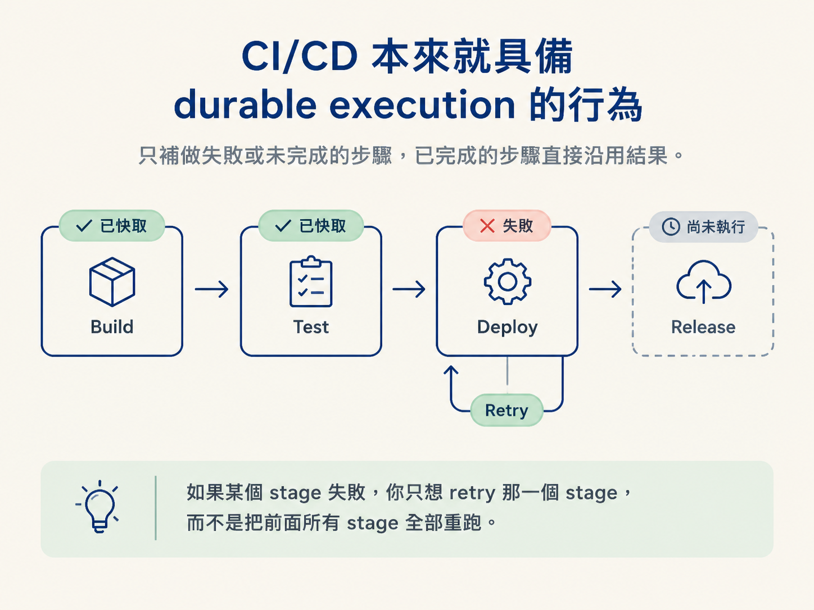

你每天 push code、等待 CI 結果，其實已經在使用分散式系統。本節會把 Jenkins、GitHub Actions 的實際行為，對應到 durable execution 的 retry、replay、cache、非同步回報與斷線恢復。
上一節提到，durable execution 會把 agent 帶進分散式運算的世界。這聽起來很遙遠，但你每天 push 一次 code，就已經在操作一個分散式系統：CI/CD（持續整合與持續交付）。
當你把 code push 上去，GitHub 上的 repository checks 就會開始執行。不論是 Jenkins 還是 GitHub Actions，它們都是「跑在另一台機器上的另一個 process」。你的本機、GitHub，以及執行 CI/CD 的機器，是三個透過網路互相溝通的不同系統。CI/CD 在背景執行，再把每個 check 的狀態回報給你。
把一條典型的 CI/CD pipeline（管線）拆開，你會發現它天生就有上一節談到的那些特性：
| CI/CD 行為 | 對應的 durable execution 概念 |
|---|---|
| 一個 pipeline 有多個 stage | 一段執行被切成多個步驟（step） |
| 某個 stage 失敗，可以單獨 retry 它 | retry：不重跑前面已完成的步驟 |
| 某些 stage 的結果被 cache 住 | replay：使用上一次的結果，不必重新計算 |
| status 非同步回報給 GitHub | 執行獨立於觀察者：你不查看時，它仍然會更新 |
| CI/CD 掛掉後可以恢復、從斷點接續 | resilience：從 checkpoint 接續，而不是從頭開始 |
最重要的是這句：如果某個 stage 失敗，你只想 retry 那一個 stage，而不是把前面所有 stage 全部重跑。

這就是 durable execution 的核心：失敗時跳過已經完成的工作，只補做尚未完成或失敗的部分。後面第四步選擇 DBOS 時，你會看到相同的機制：系統使用 workflow ID 查詢「這一步做過了嗎？」做過就跳過，沒做過才執行。
現在把視角切回 agent。上一節的結論是：執行必須獨立於任何 consumer 或 client。CI/CD 提供了一個很具體的心智模型：
Agent 的執行必須像 CI/CD 一樣——分散、獨立，並且能處理 process 結束與錯誤。
因此，一個可靠的 agent 系統至少要具備三件事：
後面每一層 durability 都可以用這條等價關係來理解：
CI/CD 就是分散式運算；agent 的執行要「長得跟 CI/CD 一樣」。
這個類比有用，是因為 CI/CD 的 retry、replay、cache、非同步回報與斷線恢復，你每天都親眼看過，也親手使用過。下次遇到抽象的 durable execution 機制，就問自己：「如果這是在 GitHub Actions 裡，會對應到什麼？」